The following table lists all of the spells in Morrowind. The Base Cost indicates the minimum amount of Magicka required to successfully cast the spell.
Alteration spells involve manipulation of the physical world and its natural properties. Alteration effects include water breathing and walking, jumping, levitating, opening locks, and shield barriers against physical damage.
| Icon | Title | Description | Base cost |
|---|---|---|---|
| Burden | Temporarily increases the weight carried by the victim, causing fatigue to be lost at a greater rate. The magnitude of the effect is the weight added. When the effect ends, the added weight disappears. | 1 | |
| 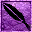 | Feather | Reduces the target's encumbrance, resulting in a slower loss of fatigue. The magnitude is the units of weight removed from encumbrance. | 1 |
| Fire Shield | Creates a shield of elemental fire around the subject's entire body. The spell reduces damage from Fire attacks and damages nearby enemies. Note that despite the color of the icon being that for Destruction, it is actually Alteration. | 3 | |
| Frost Shield | Creates a shield of elemental frost around the subject's entire body. The spell reduces damage from Frost attacks and damages nearby enemies | 1 | |
| 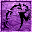 | Jump | Increases the height and distance the target may jump. The magnitude is proportional to the increase in a jump's height and distance. | 3 |
| Levitate | Temporarily enables the target to levitate into the air, moving in the direction of their choice. The magnitude is the speed at which the subject can move through the air. | 3 | |
| Lightning Shield | Creates a shield of elemental lightning around the subject's entire body. The spell reduces damage from Shock attacks and damages nearby enemies | 3 | |
| Lock | Locks a container or door. The magnitude of the effect is the lock level placed on the container or door. The effect has no duration; the container or door remains locked until unlocked by key, pick, or spell. | 2 | |
| Open | Opens a locked container or door. The effect's magnitude is the highest lock level that can be opened. | 6 | |
| Shield | Creates a magical shield around the subject's entire body. The spell adds its magnitude to the subject's Armor Rating. | 2 | |
| 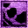 | Slowfall | Slows the target's rate of descent, reducing damage received upon landing or falling from great heights. | 3 |
| Swift Swim | Temporarily increases the swimming speed of the subject. | 2 | |
| Water Breathing | Permits the subject to breathe underwater for the duration of the spell. | 3 | |
| Water Breathing | Permits the subject to walk on the surface of any body of water for the duration of the spell. | 3 |
Conjuration spells summon magical items and beings from the outer realms to serve the caster. Conjuring effects include the mental domination of mundane and magical creatures, summoning of otherworldly weapons and armor, and summoning of Daedric servants and powers to serve and protect the caster.
| Icon | Title | Description | Base cost |
|---|---|---|---|
| Bound Battle Axe | Conjures a lesser-Daedra bound in the form of a magical, wondrously light Daedric battle axe. The battle axe appears automatically equipped on the caster, displacing any currently equipped weapon to the inventory. When the effect ends, the battle axe disappears, and any previously equipped weapon is automatically re-equipped. | 2 | |
| Bound Boots | Conjures a lesser-Daedra bound in the form of a magical, wondrously light pair of Daedric boots. The boots appear automatically equipped on the caster, displacing any currently equipped foot armor to the inventory. When the effect ends, the boots disappear, and any previously equipped footwear is automatically re-equipped. | 2 | |
| Bound Cuirass | Conjures a lesser-Daedra bound in the form of a magical, wondrously light Daedric cuirass. The cuirass appears automatically equipped on the caster, displacing any currently equipped chest armor to the inventory. When the effect ends, the cuirass disappears, and any previously equipped chest armor is automatically re-equipped. | 2 | |
| 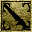 | Bound Dagger | Conjures a lesser-Daedra bound in the form of a magical, wondrously light Daedric dagger. The dagger appears automatically equipped on the caster, displacing any currently equipped weapon to the inventory. When the effect ends, the dagger disappears, and any previously equipped weapon is automatically re-equipped. | 2 |
| 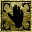 | Bound Gloves | Conjures a lesser-Daedra bound in the form of magical, wondrously light Daedric armored gloves. The armored gloves appear automatically equipped on the caster, displacing any currently equipped hand armor to the inventory. When the effect ends, the armored gloves disappear, and any previously equipped hand armor is automatically re-equipped. | 2 |
| Bound Helm | Conjures a lesser-Daedra bound in the form of a magical, wondrously light Daedric helm. The helm appears automatically equipped on the caster, displacing any currently equipped head armor to the inventory. When the effect ends, the helm disappears, and any previously equipped head armor is automatically re-equipped. | 2 | |
| 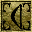 | Bound Longbow | Conjures a lesser-Daedra bound in the form of a magical, wondrously light Daedric longbow. The longbow appears automatically equipped on the caster, displacing any currently equipped weapon to the inventory. When the effect ends, the longbow disappears, and any previously equipped weapon is automatically re-equipped. | 2 |
| Bound Longsword | Conjures a lesser-Daedra bound in the form of a magical, wondrously light Daedric longsword. The longsword appears automatically equipped on the caster, displacing any currently equipped weapon to the inventory. When the effect ends, the longsword disappears, and any previously equipped weapon is automatically re-equipped. | 2 | |
| Bound Mace | Conjures a lesser-Daedra bound in the form of a magical, wondrously light Daedric mace. The mace appears automatically equipped on the caster, displacing any currently equipped weapon to the inventory. When the effect ends, the mace disappears, and any previously equipped weapon is automatically re-equipped. | 2 | |
| Bound Shield | Conjures a lesser-Daedra bound in the form of a magical, wondrously light Daedric shield. The shield appears automatically equipped on the caster, displacing any currently equipped shield to the inventory. When the effect ends, the shield disappears, and any previously equipped shield is automatically re-equipped. | 2 | |
| 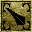 | Bound Spear | Conjures a lesser-Daedra bound in the form of a magical, wondrously light Daedric spear. The spear appears automatically equipped on the caster, displacing any currently equipped weapon to the inventory. When the effect ends, the spear disappears, and any previously equipped weapon is automatically re-equipped. | 2 |
| 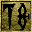 | Command Creature | Compels a creature to fight the caster's enemies for the duration of the spell. The magnitude is the level of the creature affected. When the effect ends, the creature returns to its normal behavior. | 15 |
| 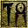 | Command Humanoid | Compels a humanoid to fight the caster's enemies for the duration of the spell. The magnitude is the level of humanoid affected. When the effect ends, the humanoid returns to its normal behavior. | 15 |
| 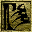 | Summon Ancestral Ghost | Summons an Ancestral Ghost to battle for the caster. It appears six feet in front of the caster and attacks any aggressive entity until the effect ends or the creature is killed. At death, or when the effect ends, the creature disappears. If summoned in town, guards will attack the caster and summoned creature on sight. | 7 |
| Summon Bonelord | Summons a Bonelord to battle for the caster. It appears six feet in front of the caster and attacks any aggressive entity until the effect ends or the creature is killed. At death, or when the effect ends, the creature disappears. If summoned in town, guards will attack the caster and summoned creature on sight. | 25 | |
| Summon Bonewalker | Summons a Bonewalker to battle for the caster. It appears six feet in front of the caster and attacks any aggressive entity until the effect ends or the creature is killed. At death, or when the effect ends, the creature disappears. If summoned in town, guards will attack the caster and summoned creature on sight. | 13 | |
| Summon Centurion Sphere | Summons a Centurion Sphere to battle for the caster. It appears six feet in front of the caster and attacks any aggressive entity until the effect ends or the creature is killed. At death, or when the effect ends, the creature disappears. If summoned in town, guards will attack the caster and summoned creature on sight. | 25 | |
| Summon Clannfear | Summons a Clannfear to battle for the caster. It appears six feet in front of the caster and attacks any aggressive entity until the effect ends or the creature is killed. At death, or when the effect ends, the creature disappears. If summoned in town, guards will attack the caster and summoned creature on sight. | 22 | |
| 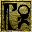 | Summon Daedroth | Summons a Daedroth to battle for the caster. It appears six feet in front of the caster and attacks any aggressive entity until the effect ends or the creature is killed. At death, or when the effect ends, the creature disappears. If summoned in town, guards will attack the caster and summoned creature on sight. | 32 |
| 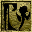 | Summon Dremora | Summons a Dremora to battle for the caster. It appears six feet in front of the caster and attacks any aggressive entity until the effect ends or the creature is killed. At death, or when the effect ends, the creature disappears. If summoned in town, guards will attack the caster and summoned creature on sight. | 28 |
| Summon Flame Atronach | Summons a Flame Atronach to battle for the caster. It appears six feet in front of the caster and attacks any aggressive entity until the effect ends or the creature is killed. At death, or when the effect ends, the creature disappears. If summoned in town, guards will attack the caster and summoned creature on sight. | 23 | |
| Summon Frost Atronach | Summons a Frost Atronach to battle for the caster. It appears six feet in front of the caster and attacks any aggressive entity until the effect ends or the creature is killed. At death, or when the effect ends, the creature disappears. If summoned in town, guards will attack the caster and summoned creature on sight. | 27 | |
| 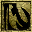 | Summon Golden Saint | Summons a Golden Saint to battle for the caster. It appears six feet in front of the caster and attacks any aggressive entity until the effect ends or the creature is killed. At death, or when the effect ends, the creature disappears. If summoned in town, guards will attack the caster and summoned creature on sight. | 55 |
| 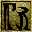 | Summon Greater Bonewalker | Summons a Greater Bonewalker to battle for the caster. It appears six feet in front of the caster and attacks any aggressive entity until the effect ends or the creature is killed. At death, or when the effect ends, the creature disappears. If summoned in town, guards will attack the caster and summoned creature on sight. | 15 |
| 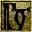 | Summon Hunger | Summons a Hunger to battle for the caster. It appears six feet in front of the caster and attacks any aggressive entity until the effect ends or the creature is killed. At death, or when the effect ends, the creature disappears. If summoned in town, guards will attack the caster and summoned creature on sight. | 29 |
| Summon Scamp | Summons a Scamp to battle for the caster. It appears six feet in front of the caster and attacks any aggressive entity until the effect ends or the creature is killed. At death, or when the effect ends, the creature disappears. If summoned in town, guards will attack the caster and summoned creature on sight. | 12 | |
| Summon Skeletal Minion | Summons a Skeleton to battle for the caster. It appears six feet in front of the caster and attacks any aggressive entity until the effect ends or the creature is killed. At death, or when the effect ends, the creature disappears. If summoned in town, guards will attack the caster and summoned creature on sight. | 13 | |
| Summon Storm Atronach | Summons a Storm Atronach to battle for the caster. It appears six feet in front of the caster and attacks any aggressive entity until the effect ends or the creature is killed. At death, or when the effect ends, the creature disappears. If summoned in town, guards will attack the caster and summoned creature on sight. | 38 | |
| Summon Winged Twilight | Summons a Winged Twilight to battle for the caster. It appears six feet in front of the caster and attacks any aggressive entity until the effect ends or the creature is killed. At death, or when the effect ends, the creature disappears. If summoned in town, guards will attack the caster and summoned creature on sight. | 52 | |
| 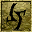 | Turn Undead | Temporarily increases an undead creature's flee rating (its inclination to run from an attacker). The effect's magnitude is the value increase to the flee rating. | 0.2 |
Destruction spells harm living and undead creatures, and mages specializing in destruction are usually war wizards. There are many common variants of destruction spells, not to mention the countless custom versions created by ambitious spellcasters. There are so many different destruction spells that it helps to divide them into five different classes of effects: elemental damage, attribute-draining, attribute-damaging, vulnerability, and disintegration.
| Icon | Title | Description | Base cost |
|---|---|---|---|
| Corprus | Infects the victim with corprus disease. Corprus is a special disease with unique properties. The victim remains affected by the disease until it is cured. | 2500 | |
| Damage Attribute | Lowers the value of one of the victim's base Attributes. Any derived attributes are recalculated. Attributes do not return to their original values at the end of the spell's duration and may only be restored with the appropriate restore attribute spell or potion. The magnitude is the units of attribute lost each second of the spell's duration. | 8 | |
| Damage Fatigue | Lowers the value of a victim's Fatigue. Fatigue does not return to its original value at the end of the spell's duration; it restores normally, or may be restored with a restore fatigue spell or potion. The magnitude is the units of fatigue lost each second of the spell's duration. | 4 | |
| Damage Health | Lowers the value of a victim's Health. Health does not return to its original value at the end of the spell's duration; it restores normally, or may be restored with a restore health spell or potion. The magnitude is the units of health lost each second of the spell's duration. | 8 | |
| 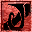 | Damage Magicka | Lowers the value of a victim's Magicka. Magicka does not return to its original value at the end of the spell's duration; it restores normally, or may be restored with a restore magicka spell or potion. The magnitude is the units of magicka lost each second of the spell's duration. | 8 |
| Damage Skill | Lowers the value of one of the victim's Skills. Skills do not return to their original values at the end of the spell's duration; they may only be restored with the appropriate restore skill spell or potion. The magnitude is the units of skill lost each second of the spell's duration. | 8 | |
| Disintegrate Armor | Damages the health rating of an equipped piece of armor on a touched or ranged victim. | 6 | |
| 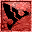 | Disintegrate Weapon | Damages the health rating of an equipped weapon on a touched or ranged victim. | |
| 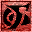 | Drain Attribute | Temporarily lowers the value of one of a victim's base Attributes. Any derived attributes are recalculated. Attributes return to their original values when the spell ends. The magnitude is the units of attribute reduced each second of the spell's duration. | 1 |
| Drain Fatigue | Temporarily lowers the value of the victim's Fatigue. Fatigue returns to its original value when the spell ends. The magnitude is the units of fatigue reduced each second of the spell's duration. | 2 | |
| Drain Health | Temporarily lowers the value of the victim's Health. Health returns to its original value when the spell ends. The magnitude is the units of health reduced each second of the spell's duration. | 4 | |
| Drain Magicka | Temporarily lowers the value of a victim's Magicka. Magicka returns to its original value when the spell ends. The magnitude is the units of magicka reduced each second of the spell's duration. | 4 | |
| Drain Skill | Temporarily lowers the value of one of a victim's Skills. The skill returns to its original value when the spell ends. The magnitude is the units of skill reduced each second of the spell's duration. | 1 | |
| Fire Damage | Produces a manifestation of elemental fire. Upon contact with an object, this manifestation explodes, causing damage. | 5 | |
| Frost Damage | Produces a manifestation of elemental frost. Upon contact with an object, this manifestation causes frost damage over the area of the spell. | 5 | |
| 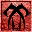 | Poison | Creates a spray of poisonous acid that causes damage to the health of the victim. A victim continues to lose health from the poison effect for the duration of the spell, unless the effect is canceled by a cure poison spell or potion. | 9 |
| Shock Damage | Produces bolts of elemental lightning. The magnitude is the damage received by the first victim along a bolt's path. | 7 | |
| Stunted Magicka | Prevents the target from regenerating magicka while sleeping for the duration of the effect. | 1 | |
| 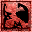 | Weakness to Blight Disease | Decreases the target's resistance to blight diseases. | 4 |
| 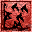 | Weakness to Common Disease | Decreases the target's resistance to common diseases. | 2 |
| 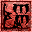 | Weakness to Corprus Disease | Decreases the target's resistance to Corprus disease. | 4 |
| 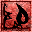 | Weakness to Fire | Decreases the target's resistance to Fire Damage. | 2 |
| 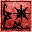 | Weakness to Frost | Decreases the target's resistance to Frost Damage. | 2 |
| 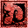 | Weakness to Magicka | Decreases the target's resistance to damage from non-elemental magic attacks. | 2 |
| 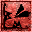 | Weakness to Normal Weapons | Decreases the target's resistance to damage from normal weapons (non-enchanted or silver). | 2 |
| 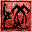 | Weakness to Poison | Decreases the target's resistance to Poison. | 2 |
| 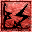 | eakness to Shock | Decreases the target's resistance to Shock Damage. | 2 |
Illusion spells affect the perception and mind of living subjects. Illusion effects include blinding, paralyzing, and silencing subjects, calming and enraging subjects, and distracting observers so they do not notice the caster -- the invisibility effect.
| Icon | Title | Description | Base cost |
|---|---|---|---|
| Blind | Obscures the vision of the victim, reducing their chance to strike an opponent with weapon or hand-to-hand attacks. | 1 | |
| Calm Creature | Temporarily reduces a creature's attack rating (its inclination to attack). The effect's magnitude is the value of the reduction of the attack rating. When the effect ends, the creature's attack rating returns to normal. Humanoids, undead, Daedra, and artifacts are not affected by this spell. | 1 | |
| 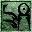 | Calm Humanoid | Temporarily reduces a humanoid's attack rating (its inclination to attack). The effect's magnitude is the value of the reduction of the attack rating. When the effect ends, the humanoid's attack rating returns to normal. Creatures, undead, Daedra, and artifacts are not affected by this spell. | 1 |
| Chameleon | Allows the target to blend into the surroundings and remain unseen. The target can attack and use objects without disrupting the effect. The spell ranges from 1% to 100% effectiveness, the magnitude being equal to the degree of concealment. | 1 | |
| 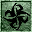 | Charm | Temporarily increases the target's disposition towards the caster. When the effect ends, the target's disposition returns to its original value. | 5 |
| 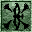 | Demoralize Creature | Temporarily increases a creature's flee rating (its inclination to run from an attacker). The effect's magnitude is the value of the increase of the flee rating. When the effect ends, the creature's flee rating returns to normal. Humanoids, undead, Daedra, and artifacts are not affected by this spell. | 1 |
| 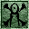 | Demoralize Humanoid | Temporarily increases a humanoid's flee rating (its inclination to flee from an attacker). The effect's magnitude is the value of the increase of the flee rating. When the effect ends, the humanoid's flee rating returns to normal. Creatures, undead, Daedra, and artifacts are not affected by this spell. Note: This effect is considered Mysticism, when it should clearly be Illusion. | 1 |
| Frenzy Creature | Temporarily increases a creature's attack rating (its inclination to attack). The effect's magnitude is the value of the increase in the attack rating. When the effect ends, the creature's attack rating returns to normal. Humanoids, undead, Daedra, and artifacts are not affected by this spell. | 1 | |
| 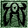 | Frenzy Humanoid | Temporarily increases a humanoid's attack rating (its inclination to attack). The effect's magnitude is the value of the increase in the attack rating. When the effect ends, the humanoid's attack rating returns to normal. Creatures, undead, Daedra, and artifacts are not affected by this spell. | 1 |
| 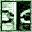 | Invisibility | Conceals the presence of the subject from observers. If the subject attacks, speaks, or activates an object, the effect is dispelled. The magnitude of this effect is not variable; the subject is always 100% invisible. | 20 |
| 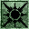 | Light | Creates a projectile of tangible light. Upon striking a target, the projectile illuminates the area for the duration of the effect. The projectile does not cause any damage. | 0.2 |
| Night Eye | Temporarily endows the subject with the ability to see in the dark. The effect's magnitude is the degree to which the ambient light level is raised. | 0.2 | |
| Paralyze | Renders the target unable to move. This effect has no magnitude, only duration. | 40 | |
| Rally Creature | Temporarily decreases a creature's flee rating (its inclination to flee from an attacker). The effect's magnitude is the value of the decrease in the flee rating. When the effect ends, the creature's flee rating returns to normal. Humanoids, undead, Daedra, and artifacts are not affected by this spell. | 0.2 | |
| 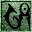 | Rally Humanoid | Temporarily decreases a humanoid's flee rating (its inclination to flee from an attacker). The effect's magnitude is the value of the decrease in the flee rating. When the effect ends, the humanoid's flee rating returns to normal. Creatures, undead, Daedra, and artifacts are not affected by this spell. | 0.2 |
| Sanctuary | Causes the target to be harder to hit. The magnitude is the value that is added to the target's chance to dodge attacks. | 1 | |
| Silence | Temporarily renders a victim unable to cast spells. | 40 | |
| Sound | Produces a disorienting noise in the victim's mind. The magnitude is the reduction in the victim's chance to successfully cast spells. | 3 |
Mysticism spells involve the manipulation of magical forces and boundaries to bypass the structures and limitations of the physical world. These spells bind souls in gems, or teleport the caster's body, or manipulate the world with telekinesis, or absorb or reflect magical energies, or sense unseen objects at a distance.
| Icon | Title | Description | Base cost |
|---|---|---|---|
| Absorb Attribute | Temporarily transfers a portion of one of the victim's Attributes to the caster. The caster may exceed the attribute's maximum of 100 for the duration of the spell. When the effect ends, both caster and victim attributes return to their original values. | 2 | |
| Absorb Fatigue | Permanently transfers Fatigue from the victim to the caster, wearying the victim and invigorating the caster. The caster may not exceed their own natural maximum Fatigue value, but even if the caster is at full Fatigue, casting this spell will still drain the target's Fatigue. | 4 | |
| Absorb Health | Permanently transfers Health from the victim to the caster, injuring the victim and vitalizing the caster. The caster may not exceed their own natural maximum Health value, but even if the caster is at full Health, casting this spell will still drain the target's Health. | 8 | |
| Absorb Magicka | Transfers Magicka from the victim to the caster, reducing the victim's spellcasting reservoirs and filling the caster's. The caster may not exceed their own natural maximum Magicka value, but even if the caster is at full Magicka, casting this spell will still drain the target's Magicka. | 8 | |
| Absorb Skill | Temporarily reduces one of the victim's Skills and increases the caster's. When the effect ends, the caster loses the borrowed skill, and the victim regains all lost skill. Unused in the game, and only found on a developers' test item, Clutterbane. | 2 | |
| 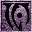 | Almsivi Intervention | The subject of this effect is transported instantaneously to the altar of the nearest shrine or edifice of the Tribunal Temple. | 150 |
| 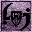 | Detect Animal | Allows the caster of this effect to detect any entity animated by a spirit; said entities appear on the map as red-circle symbols. This effect includes all classes of monsters (creatures, undead, Daedra, Dwemer constructs). Humanoids are NOT detected by this spell. The magnitude is the range in feet from the caster that animals are detected. | 0.75 |
| 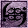 | Detect Enchantment | Allows the caster of this effect to detect enchanted items; said items appear on the map as blue-circle symbols. The effect's magnitude is the range in feet from the caster that enchanted items are detected. | 1 |
| Detect Key | Allows the caster of this effect to detect Keys; their locations appear on the map as green-circle symbols. The effect's magnitude is the range in feet from the caster that keys are detected. | 1 | |
| 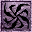 | Dispel | Removes magicka-based spell effects from the subject. Dispel does not affect abilities, disease, curses, or constant magic item effects. The magnitude is the chance an effect is removed. | 5 |
| Divine Intervention | Transports the subject of this effect instantaneously to the altar of the nearest shrine of the Imperial Cult. | 150 | |
| 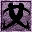 | Mark | Establishes a target location for the Recall spell to act upon. The location is established directly at the position of the caster when the spell is used. | 350 |
| 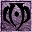 | Recall | The subject is instantaneously transported to the point set by the Mark spell. | 350 |
| Reflect | Allows the subject to reflect spell effects back at an attacking caster. The effect's magnitude is the chance that a spell effect is reflected. If the reflect spell is successful, the opposing spells reflect back at the attacking caster. If the reflect spell fails, the opposing spells take effect normally. | 10 | |
| 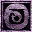 | Soultrap | Traps the soul of the targeted creature in the smallest empty soul gem in the caster's inventory, if the creature is killed during the spell's duration. | 2 |
| 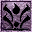 | Spell Absorption | Allows the caster to absorb an attacking spell's power as an increase to their reservoir of magicka. The magnitude is the chance that an attacking spell will be absorbed. If successful, the caster absorbs the attacking spell's cost in spell points as increased magicka. The caster's magicka cannot be increased above the caster's standard magicka level. If failed, the attacking spell takes effect normally. | 10 |
| 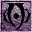 | Telekinesis | Allows the subject to pick up items, open containers, and open interior doors from a distance. The magnitude is the number of feet the subject can reach. | 1 |
Restoration spells heal, restore, and fortify the body's attributes and abilities, cure disease, and protect it from other malign influences. The primary spells of this type heal wounds, cure disease, and restore lost vitality, but can also augment strength, endurance, intelligence, agility, and other bodily attributes.
| Icon | Title | Description | Base cost | |
|---|---|---|---|---|
| Cure Blight Disease | Cures the subject of any and all Blight Diseases, and all associated traits. | 2000 | ||
| 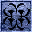 | Cure Common Disease | Cures the subject of any and all Common Diseases. | 300 | |
| Cure Corprus Disease | Cures the subject of Corprus. | 2500 | ||
| 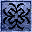 | Cure Paralyzation | Cures the subject of paralyzation. | 100 | |
| Cure Poison | Cures the subject of any Poison affecting them. The effect does not restore health lost to poisoning. | 100 | ||
| 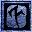 | Fortify Attack |
Raises the subject's chance of making a successful hit with a weapon or hand-to-hand attack.
This effect may be obtained only by completing the Threads of the Webspinner quest for the Morag Tong. |
1 | |
| Fortify Attribute | Temporarily increases the value of one of a subject's Attributes. Any derived attributes are recalculated. Attributes return to their original values when the spell ends. The magnitude is the value of the increase of the attribute. | 1 | ||
| Fortify Fatigue | Temporarily increases the value of a subject's Fatigue. Fatigue returns to its original values when the spell ends. The magnitude is the value of the increase in fatigue. | 0.5 | ||
| Fortify Health | Temporarily increases the value of a subject's Health. Health returns to its original values when the spell ends. The magnitude is the value of the increase in health. | 1 | ||
| Fortify Magicka | Temporarily increases the value of a subject's Magicka. Magicka returns to its original values when the spell ends. The magnitude is the value of the increase in magicka. | 1 | ||
| Fortify Maximum Magicka | Modifies the multiplier used to derive the amount of magicka the subject currently retains. The magnitude is multiplied by the subject's Intelligence to derive the magicka. The standard multiplier is 0.5. This effect is only available from Birthsigns or Racial effects. | 4 | ||
| Fortify Skill | Temporarily increases the value of one of the subject's Skills. The skill returns to its original value when the spell ends. The magnitude is the value of the increase in the skill. This spell may only be found by completing the Threads of the Webspinner quest for the Morag Tong. | 1 | ||
| 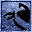 | Resist Blight Disease | Increases the subject's resistance to Blight Diseases. The magnitude is the percentage of reduction in damage caused by blight disease effects. td> | 5 | |
| Resist Common Disease | Increases the subject's resistance to Common Diseases. The magnitude is the percentage of reduction in damage caused by common disease effects. | 2 | ||
| Resist Corprus Disease | Increases the subject's resistance to Corprus disease. The magnitude is the percentage of reduction in damage caused by corprus disease effects. | 5 | ||
| Resist Fire | Increases the target's resistance to Fire Damage. The magnitude is the percentage of reduction in damage caused by elemental fire damage effects. | 2 | ||
| Resist Frost | Increases the target's resistance to Frost Damage. The magnitude is the percentage of reduction in damage caused by elemental frost damage effects. | 2 | ||
| Resist Magicka | Increases the target's resistance to damage from magicka attacks not based on elemental forces. The magnitude is the percentage of reduction in damage caused by non-elemental magic attacks. | 2 | ||
| Resist Normal Weapons | Increases the target's resistance to damage caused by any non-enchanted or silver weapon. The magnitude is the percentage of reduction in damage caused by normal weapons. | 5 | ||
| Resist Paralysis | Increases the target's resistance to paralysis. The magnitude is the percentage added to the subject's standard resistance. | |||
| Resist Poison | Increases the target's resistance to Poison. The magnitude is the percentage of reduction in damage caused by poison effects. | 2 | ||
| Resist Shock | Increases the target's resistance to Shock Damage. The magnitude is the percentage of reduction in damage caused by elemental shock damage effects. | 2 | ||
| Restore Attribute | Restores any of the subject's Attributes that have been reduced by magical attack. The magnitude is the units of attribute restored for each second of the spell's duration. | 1 | ||
| Restore Fatigue | Restores the subject's Fatigue if it has been affected by magical attack or loss. The magnitude is the units of fatigue restored for each second of the spell's duration. | 1 | ||
| Restore Health | Restores the subject's Health if it has been affected by magical or normal attack. The magnitude is the units of health restored for each second of the spell's duration. | 5 | ||
| Restore Magicka | Restores the subject's Magicka to its original value if it has been affected by magical attack or use. The magnitude is the units of magicka restored for each second of the spell's duration. | 5 | ||
| Restore Skill | Restores the subject's Skills if they have been reduced by magical attack. The magnitude is the units of skill restored for each second of the spell's duration. | 1 |
Chance of success in percent is
(Spell's skill * 2 + Willpower / 5 + Luck / 10 - Spell cost - Sound magnitude) * (0.75 + 0.5 * Current Fatigue/Maximum Fatigue)
Spell Damage is Damage * (1 - ( Resistance - Weakness )/100).
Spell Cost (the amount of magicka a spell takes to cast) for custom spells is
( Min Magnitude + Max Magnitude ) * ( Duration + Area + 1 ) * ( Base Cost / 40 ) * ( 1.5 if On Target ),
rounded down. This formula is calculated per spell effect and summed together for multi-effect spells. Built-in spells
may have a different cost than their custom equivalent.
Example: You are a lvl 1 Breton and you have 20 Destruction, 60 Willpower, 50 Luck and have 150 Maximum Fatigue,
you are not affected by Sound and you are at maximum fatigue. The spell you want to cast is "Fire Bite":
(20 * 2 + 60 / 5 + 50 / 10 - 6 - 0) * (0.75 + 0.5 * 150/150) = 63.75% chance that you will succeed